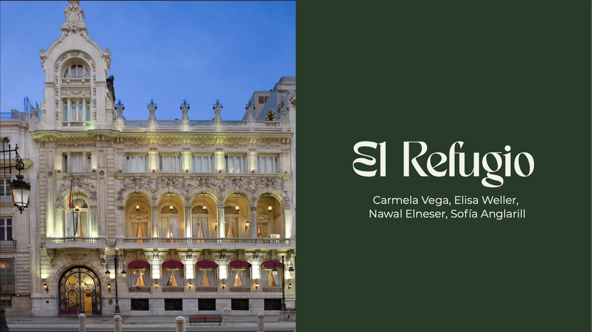

Diseño de interiores
El Refugio
Una propuesta de interiorismo pensada como un refugio íntimo y sofisticado: un espacio que acoge, invita a bajar el ritmo y permite reconectar con el placer de estar presente.

Contexto
El proyecto parte del rediseño de una sala del Casino de Madrid. La propuesta busca aprovechar mejor el espacio existente y crear una atmósfera cálida, versátil y contemporánea.
El concepto se inspira en la idea de una cueva: un lugar seguro que separa temporalmente al usuario del ritmo acelerado del exterior.
Proceso
El recorrido se plantea como una transición gradual entre exterior, entrada e interior. Cada zona responde a una función distinta, pero todas mantienen una sensación de calma y coherencia visual.
La selección de materiales, mobiliario e iluminación busca generar un ambiente acogedor sin perder la elegancia propia del edificio.
Resultado
El resultado es un espacio flexible que permite descansar, conversar o trabajar. La propuesta equilibra sofisticación, comodidad y una identidad visual inspirada en la sensación de refugio.
Ficha técnica
- Disciplina
- Diseño de interiores
- Contexto
- Proyecto académico colaborativo
- Año
- 2026